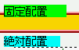

幅が相対単位の値で指定された固定配置（position: fixed;）の要素は、ブラウザの文字サイズ変更機能を用いて文字サイズを変更してもボックスの幅が変更後の文字サイズを反映した値にならない。
<div style="position:fixed; left:10px; top:10px; width:5em; background:lime;"> 固定配置</div> <div style="position:absolute; left:10px; top: 50px; width:5em; background:aqua;"> 絶対配置</div>
同じ幅を指定した、固定配置のボックスと絶対配置のボックスを置いています。ブラウザの「表示」（または「View」）メニューから文字サイズをいろいろな値に変更してください。
始めに文字サイズ100%で表示してから、90%に変更した後のスクリーンショットです。
Opera6.05での表示
Moz1.0での表示
Moz1.0では、閲覧者がページをリロードするとこの現象は解消されます。N6.2.3では、リロードをしてもボックスの幅は変わりません。
Moz1.0、N6.2.3では標準・互換モードともに不具合の発生が確認されました。